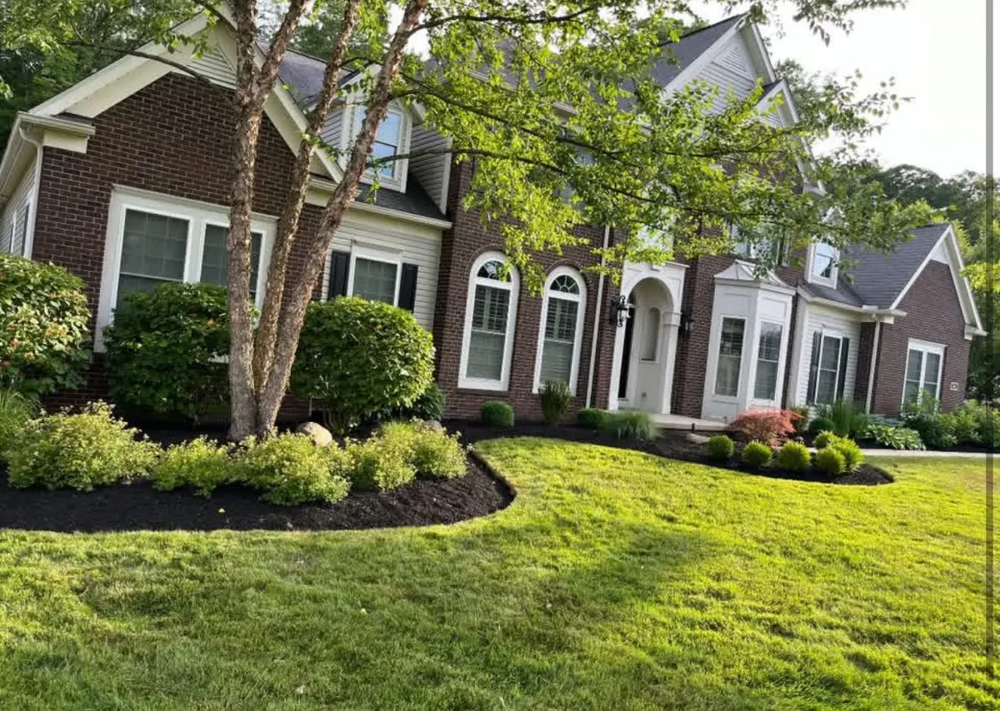

What holds up against heavy deer pressure in Bainbridge, Auburn, and South Russell — what to stop planting, and the design moves that matter more than the plant list.

If you garden in Geauga County, you already know the drill. You plant hostas in May, they look beautiful for three weeks, and one morning in June they are chewed to stems. Then you replace them and it happens again.
Deer pressure here is as heavy as anywhere in Ohio. Bainbridge, Auburn, South Russell, and the wooded edges of Chagrin Falls all back up to enough cover to support a serious population, and our winters push them into landscape beds looking for anything green.
Here is what actually survives, what to stop planting, and the honest truth about “deer-proof.”
No plant is deer-proof. A hungry enough deer in a hard enough February will sample almost anything. What exists is a reliable spectrum of preference — plants deer eat first, plants they eat when the good stuff is gone, and plants they mostly walk past.
Building beds out of that third category is the entire strategy. It is not about repelling deer; it is about not serving dinner.
Three characteristics do most of the work:
If deer are a problem on your property, these are the ones that keep failing:
Arborvitae deserves a specific warning because it is sold constantly as a privacy screen here. Plant a row along a wooded edge in Bainbridge or Auburn and by March you will have a hedge that is bare from the ground to five feet up, with green on top. That damage does not grow back — those branches are gone.
Layer by vulnerability. Put resistant plants on the outside edge of beds, closest to where deer approach from cover, and save anything they like for spots close to the house.
Use the house as a barrier. Deer are far less willing to browse in a tight space next to a door people use regularly.
Group aromatics as a screen. A band of catmint, salvia, and Russian sage along the approach side masks what is behind it.
Protect new plantings for the first year. Everything is more vulnerable while establishing. A season of fencing or repellent on a new install is worth it.
Accept the winter reality. February and March are when deer eat things they normally avoid. Evergreens near cover are the highest-risk plants in the highest-risk months.
Somewhat, with conditions. They must be reapplied after rain and as new growth appears, and rotating between products matters because deer acclimate to a single scent. They are a supplement to good plant selection, not a substitute for it.
If you would rather stop replanting the same beds every year, we design around deer pressure from the start — see our landscaping and design service, or the local conditions we deal with in Bainbridge and Auburn Township.
For perennials, Russian sage, catmint, daffodils, and alliums are about as reliable as it gets here. For shrubs, boxwood is the workhorse of deer-country landscaping in Geauga County. None are absolutely deer-proof, but these are consistently passed over.
By February natural browse is gone and evergreens are one of the only green things left. Arborvitae is highly palatable, so deer strip it from the ground up to roughly five feet — the browse line. Those branches do not regrow, which is why winter damage on arborvitae is permanent.
They help, but they need reapplication after rain and as new growth appears, and you should rotate products since deer acclimate to a single scent. Treat repellents as a supplement to resistant plant selection, not a replacement for it.
Only in protected spots — a courtyard, a tight space against the house near a regularly used door, or inside fencing. In an open bed near a wooded edge in Bainbridge or Auburn, hostas will be browsed. Ferns are the usual substitute for shade beds and hold up far better.
We design landscape beds around real deer pressure in Bainbridge, Auburn, South Russell, and the wooded edges of Chagrin Falls. Free design consultation.
Get a Design Quote